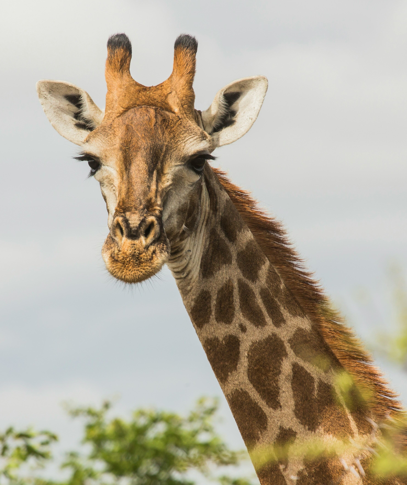
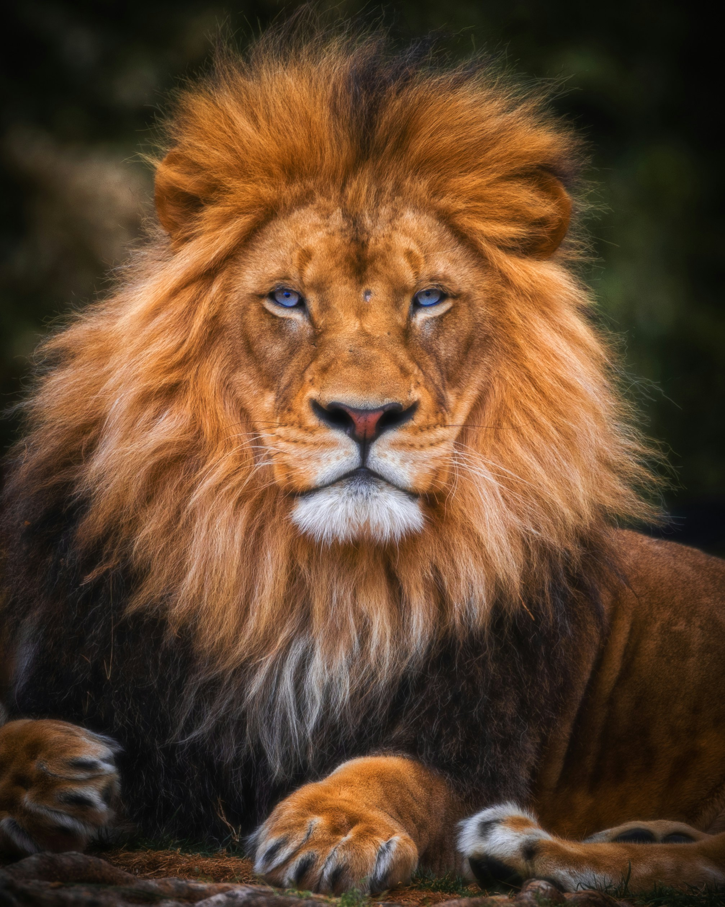
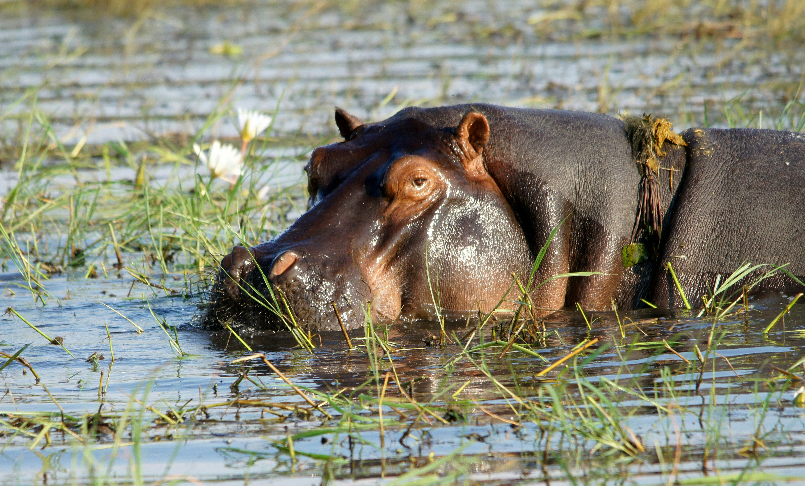
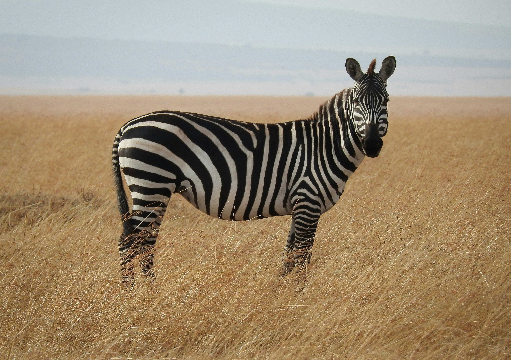

הסוואנה האפריקאית-

הגירפות הן היונקות הגבוהות ביותר בעולם, בעלות צוואר ארוך וכתמי פרווה ייחודיים. הן ניזונות מעלי עצים גבוהים ומסוגלות להסתדר זמן רב ללא שתיית מים.
גירפה

האריה ידוע כמלך החיות. האריות חיים בלהקות משפחתיות בסוואנה הפתוחה, והלביאות מובילות את הציד עבור הלהקה כולה.
אריה

היפופוטמים הם ענקי מים מרתקים. למרות גופם הכבד, הם שחיינים מעולים ומבלים את שעות היום החמות בטבילה בנהרות ובמקורות מים.
היפופוטם

הזברות מפורסמות בזכות דפוס הפסים השחורים-לבנים המיוחד שלהן. הפסים משמשים להן כהסוואה מעולה בטבע ומבלבלים את הטורפים.